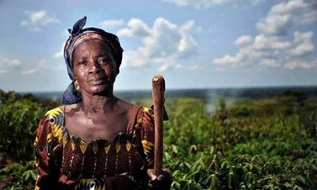

MULHERES NO ORÇAMENTO
Representatividade importa
Analisamos o orçamento de dez políticas públicas voltadas para mulheres nos governos Lula, Dilma, Temer e Bolsonaro. O resultado aponta que a representatividade em lugares de poder movimenta as prioridades de governo e reduz desigualdades estruturais.
O gráfico abaixo revela que o maior orçamento para as mulheres ocorreu durante os quase seis anos de mantado de Dilma. Além disso, metade das políticas públicas foi criada no seu governo. Pelo menos seis das ações foram descontinuadas nos anos seguintes.
GOVERNO LULA
Ficha do governo: 2 mandatos 3286 dias no poder Partido dos Trabalhadores Vice: José de Alencar
Início das políticas públicas
Embora o governo Lula tenha sido marcado pelas políticas de combate à fome, cujo resultado também impacta as mulheres, as políticas voltadas exclusivamente para a emancipação delas não tiveram orçamentos expressivos.
Apesar disso, quatro das dez políticas que analisamos foram criadas durante o seu governo. Duas delas, relacionadas à saúde da mulher, surgiram ainda no primeiro mandato. As outras duas, ligadas à autonomia econômica e atendimento de mulheres vítimas de violência, foram estabelecidas a partir do segundo mandato. Vale lembrar que, dos quatro presidentes analisados, Lula foi o que ficou mais tempo no governo.
GOVERNO DILMA
Ficha do governo: 2 mandatos (interrompido) 2069 dias no poder Partido dos Trabalhadores Vice: Michel Temer
Políticas dobram e orçamento cresce
No governo Dilma, o número de políticas públicas direcionadas para mulheres mais que dobrou — de quatro passou para nove. Além disso, o orçamento foi oito vezes maior do que o recurso disponibilizado no governo Lula — de 323,4 milhões subiu para 2,6 bilhões.
Em 2016, o orçamento caiu 43,6% em relação ao ano anterior. Fontes de dentro do governo dizem que houve impacto da crise fiscal. Nós consideramos o orçamento daquele ano como sendo do governo Dilma porque a previsão orçamentária ocorre no início do ano. Em agosto, ela foi impichada e substituída pelo seu vice, Michel Temer.